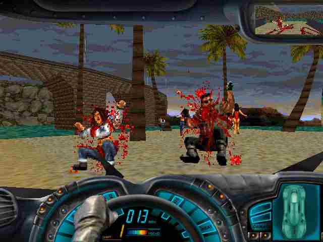

|  | Készítette:
|
|---|
A Carmageddon a Stainless Software fejlesztette autós harcolós (car combat) játék. Az Interplay és az SCi adta ki. Egy 1975-ös "kultikus" film a Death Race 2000 inspirálta készítését.
Több országban (például Németországban és egy rövid ideig az Egyesült Királyságban) a játék csak zombikat vagy robotokat tartalmazott. Az élőholtak elütése etikusabbnak tűnt. Nem hivatalos "blood patch"-ek kerültek kiadásra, melyek kicserélték a zombik grafikáját és hangját véresebb változatokra. Később hivatalos patchek érkeztek a fejlesztőktől, melyek eltüntették a cenzúrát.
Említésre méltó a játék akkori szemmel nézve realisztikusnak számító fizikája, valamint a film készítő módja. Első példája továbbá, a menj-bárhova 3D-s autós játékoknak.
A játék bevezető videója alatti zene a Fear Factory zenekar Demanufacture albumának 3. száma, a Zero Signal alapja, vokál nélkül. A Demanufacture és a Body Hammer c. nóták is megtalálhatók a hivatalos OST-k között szintúgy vokál nélkül.